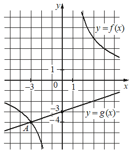

Авторский разбор и аудит предварительны; внешней экспертизы нет.
Модель автора: claude-opus-5-5 (opus; effort=low); в основных частотах: True ·
Впишите правильный ответ.
На рисунке изображены графики функций видов и пересекающиеся в точках и Найдите абсциссу точки

КЭС: 3.1 Функция, способы задания функции. График функции. Взаимно обратные функции. Чётные и нечётные функции. Периодические функции
12
| ID / вход | Действие | Результат | Локальные KC |
|---|---|---|---|
| s1 · condition | Считать по рисунку координаты точки A пересечения графиков и точки пересечения прямой с осью Oy | A(-3; -4); прямая проходит через (0; -3) | kc1 |
| s2 · s1 | Найти коэффициент k гиперболы по точке A, лежащей на графике f | k = (-3)·(-4) = 12, f(x) = 12/x | kc2 |
| s3 · s1 | Найти коэффициенты прямой по двум её точкам | b = -3, a = (-3-(-4))/(0-(-3)) = 1/3; g(x) = x/3 - 3 | kc2 |
| s4 · s2, s3 | Составить уравнение для абсцисс точек пересечения f(x)=g(x) и свести его к квадратному при x≠0 | 12/x = x/3 - 3 ⇔ x^2 - 9x - 36 = 0, x ≠ 0 | kc3 |
| s5 · s4, s1 | Решить квадратное уравнение и выбрать корень, отличный от абсциссы точки A | x = -3 (точка A) или x = 12; абсцисса B равна 12 | kc4 |
[
{
"id": "m1",
"name": "Восстановить формулы функций по графику и найти второе пересечение через уравнение f(x)=g(x)",
"step_ids": [
"s1",
"s2",
"s3",
"s4",
"s5"
]
}
]По изображению графика на клетчатой координатной плоскости определить координаты отмеченных или узловых точек; применимо, когда точки явно лежат в узлах сетки.
{
"local_kc_id": "kc1",
"status": "match",
"catalog_kc_id": "graph_coordinates",
"evidence": [
{
"ref": "step:s1:action",
"quote": "Считать по рисунку координаты точки A пересечения графиков и точки пересечения прямой с осью Oy"
},
{
"ref": "step:s1:result",
"quote": "A(-3; -4); прямая проходит через (0; -3)"
},
{
"ref": "image:assets/f59e86b85dbb1122235251c1.png",
"region_description": "Левая нижняя часть: точка A на пересечении гиперболы и прямой, подписи -3 на оси Ox и -4 на оси Oy; прямая y=g(x) пересекает ось Oy у отметки -3"
}
],
"context_refs": [
"condition"
],
"alternatives_checked": [],
"rationale": "Считывание отмеченной точки и пересечения с осью по клетчатой сетке с подписанным масштабом; восстановление формул выполнено отдельно в s2-s3.",
"proposal": null,
"blocking": false,
"issue_ids": []
}Вход: вид функции с неизвестными параметрами и координаты точек графика. Подставить координаты в формулу и решить получившиеся уравнения относительно параметров.
{
"local_kc_id": "kc2",
"status": "needs_split",
"catalog_kc_id": null,
"evidence": [
{
"ref": "step:s2:result",
"quote": "k = (-3)·(-4) = 12, f(x) = 12/x"
},
{
"ref": "step:s3:result",
"quote": "b = -3, a = (-3-(-4))/(0-(-3)) = 1/3; g(x) = x/3 - 3"
}
],
"context_refs": [
"step:s1:result"
],
"alternatives_checked": [
{
"catalog_kc_id": "literal_f253b50b98a1",
"reason": "Точно соответствует s3 (прямая по двум точкам с разными абсциссами), но не s2."
},
{
"catalog_kc_id": "direct_proportion",
"reason": "Касается y=kx, k=y/x; для гиперболы k=xy — другая операция."
},
{
"catalog_kc_id": "literal_51a8c0abd718",
"reason": "Корневая функция, не гипербола."
}
],
"rationale": "Один локальный кандидат покрывает два разных действия над разными классами функций: восстановление коэффициента обратной пропорциональности по одной точке (s2) и линейной функции по двум точкам (s3).",
"proposal": {
"parts": [
{
"step": "s2",
"action": "Восстановить коэффициент обратной пропорциональности y=k/x по точке с ненулевой абсциссой: k=x·y",
"possible_match": null,
"note": "кандидат на новый узел"
},
{
"step": "s3",
"action": "Восстановить y=ax+b по двум точкам",
"possible_match": "literal_f253b50b98a1"
}
]
},
"blocking": false,
"issue_ids": []
}Вход: уравнение вида рациональная дробь = линейное выражение. Умножить на знаменатель с учётом условия его ненулевости и привести к квадратному уравнению.
{
"local_kc_id": "kc3",
"status": "match",
"catalog_kc_id": "literal_9698b97fef22",
"evidence": [
{
"ref": "step:s4:result",
"quote": "12/x = x/3 - 3 ⇔ x^2 - 9x - 36 = 0, x ≠ 0"
}
],
"context_refs": [
"step:s2:result",
"step:s3:result"
],
"alternatives_checked": [
{
"catalog_kc_id": "denominator_domain",
"reason": "Только сохранение ограничений, без умножения на знаменатель."
},
{
"catalog_kc_id": "graph_intersection",
"reason": "Составление f(x)=g(x) — отдельное действие в s4, не входит в определение kc3."
}
],
"rationale": "Умножение рационального уравнения на знаменатель x с условием x≠0 и приведение к квадратному соответствует определению; составление уравнения f(x)=g(x) не включается.",
"proposal": null,
"blocking": false,
"issue_ids": [
"i1"
]
}Найти корни квадратного уравнения и выбрать из них удовлетворяющие дополнительному условию задачи (ограничениям или уже известному корню).
{
"local_kc_id": "kc4",
"status": "needs_split",
"catalog_kc_id": null,
"evidence": [
{
"ref": "step:s5:action",
"quote": "Решить квадратное уравнение и выбрать корень, отличный от абсциссы точки A"
},
{
"ref": "step:s5:result",
"quote": "x = -3 (точка A) или x = 12; абсцисса B равна 12"
}
],
"context_refs": [
"step:s4:result",
"step:s1:result"
],
"alternatives_checked": [
{
"catalog_kc_id": "quadratic_discriminant",
"reason": "Покрывает нахождение корней, но способ (дискриминант/Виет) в решении не показан, и отбор не входит."
},
{
"catalog_kc_id": "literal_c840012ba3dd",
"reason": "Отбор по условиям модели близок, но здесь отбор по уже известной точке A, а не по ОДЗ/смыслу."
},
{
"catalog_kc_id": "literal_ae9adc80bc91",
"reason": "Отбор по области/промежутку, не по известному корню."
}
],
"rationale": "Кандидат объединяет решение квадратного уравнения и отбор корня по сопоставлению с известной абсциссой A.",
"proposal": {
"parts": [
{
"action": "Найти корни x^2-9x-36=0",
"possible_match": "quadratic_discriminant",
"note": "способ не показан; возможно uncertain"
},
{
"action": "Исключить корень, совпадающий с абсциссой известной точки пересечения A",
"possible_match": "literal_c840012ba3dd",
"note": "частичное соответствие; возможно новый узел"
}
]
},
"blocking": false,
"issue_ids": []
}[]
[
{
"id": "i1",
"kind": "missing_annotation",
"refs": [
"step:s4:action"
],
"description": "В s4 выполнено составление f(x)=g(x) для абсцисс точек пересечения (каталожный graph_intersection), но отдельного локального кандидата нет; kc3 описывает только преобразование дробного уравнения.",
"blocking": false,
"affected_local_kc_ids": [
"kc3"
]
}
]{
"author_path": "data/annotation/runs/2026-11-09-fipi-team-bogdan108-next-100/raw/author/6F2D5E.json",
"auditor_path": "data/annotation/runs/2026-11-09-fipi-team-bogdan108-next-100/raw/auditor/6F2D5E.json",
"accepted_after_review": null
}